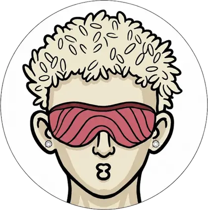
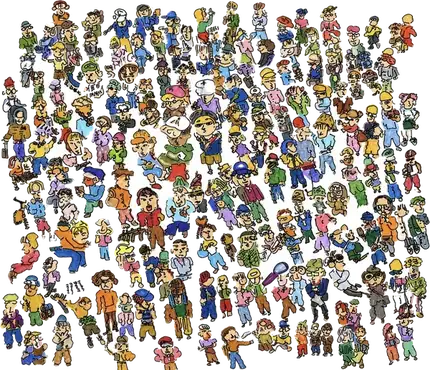
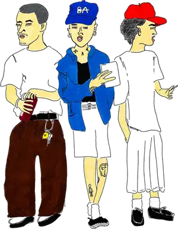
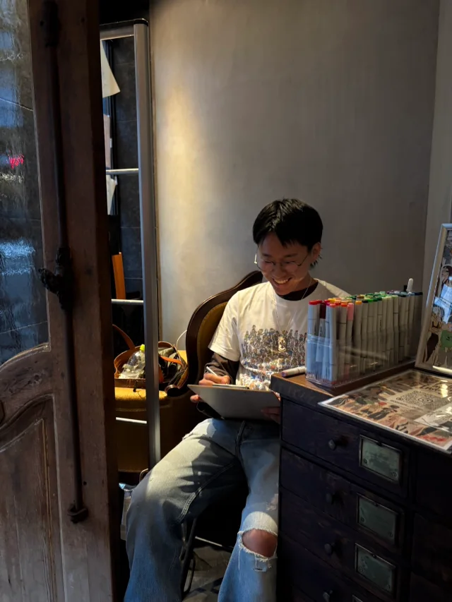

ABOUT持ち歩いているノートから
END OF
NOTEBOOK
SKETCH BOOK No.01

タップでめくる
0101
その日の空気を、
一本の線に。
THE AIR OF THAT DAY, IN A SINGLE LINE.
CONCEPT
その瞬間の空気を、線に残す。

街で見かけた人を、
そのまま描いています。
制作についてCONCEPT
02
綺麗に整えすぎるのではなく、手描きならではのラフな線や質感を活かし、ファッションや人物、街の雰囲気を表現。

これまでROOTS
01
観察する
ファッションや街、人の雰囲気を観察し、紙とペンで描き続ける中から活動をスタート。
02
描きためる
持ち歩いているノートに描きため、アナログならではの線や偶然生まれる表情を作品に。
03
発信する
SNSで作品を発信。日々のスケッチを積み重ねる。
NOW
組んでつくる
イベントやブランドとのコラボレーション。
05画材TOOLS
— 持ち歩いているノートに、そのまま。
06PROFILEプロフィール

NAOTO
OTAKA
イラストレーター
ファッションを中心に、手描きならではのラフな線や色彩を生かしたイラストを制作する。人物の装いや日常の何気ない瞬間を独自の視点で切り取り、ファッションやライフスタイルにまつわる表現を展開する。
実績COLLABORATION
この先の予定は、決まったぶんから足していきます。
ご依頼・ご相談CONTACT
用途や時期が決まっていない段階でも大丈夫です。まずは描きたいものを聞かせてください。
No.004 — ____ . __ . __ あなたの仕事 ここに入ります YOUR PROJECTお問い合わせへ 未定お仕事のご相談はフォームから。イラスト制作／人物・ファッションスケッチ／ライブスケッチ／企業コラボに対応しています。